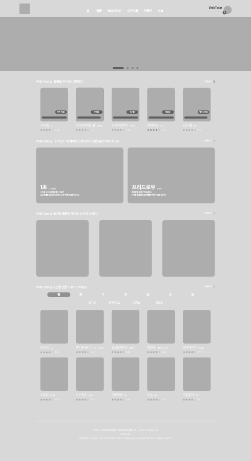
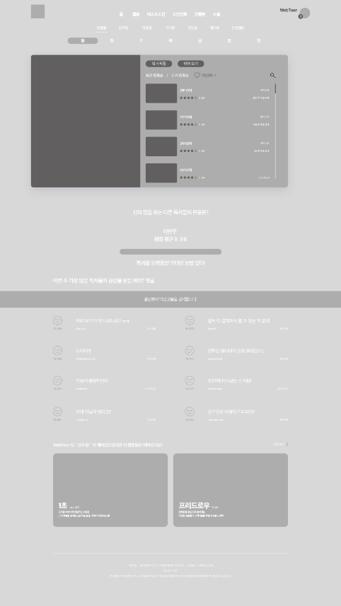

Solutions
Naver webtoon
Web
프로젝트 기간 - 2021. 07 ~ 2021. 07
개인작업 - 100%
Tool - Xd, Ps, Ai, Zeplin, Visual Studio Code
@2x.png)
@-1.png)
OVER VIEW
네이버 만화의 기존 웹사이트 내에 많은 콘텐츠가 존재하는 만큼
해당 콘텐츠들을 정확하게 사용자에게 전달하는 것 이 중요하다고 생각합니다.
그러나 현재 네이버 만화의 웹사이트는 해당 콘텐츠 들을
정확하게 전달하지 못한다고 판단되어
조금 더 실용적이며 정확하게 사용자에게 전달할 수 있는 방법은
어떤 것이 있을까 하는 생각으로 출발한 프로젝트입니다.
COLOR
Main
#00D464
Sub
#191919
#FF5151
FONT
- AppleSDGothicNeo
- AppleSDGothicNeo
- AppleSDGothicNeo
- AppleSDGothicNeo
- B00
- SB00
- R00
- L00
WIRE FRAME
Web  
Solutions
Main page
실제 사용자들이 해당 웹사이트를
방문하는 주된 목적은
콘텐츠 감상이라고 생각합니다
그리하여 해당 사용자에게
새로운 콘텐츠의 추천과
감상했던 콘텐츠를 먼저 표시해 주어
사용자의 편의성을 증가시켰습니다.
Solutions
Main page
상위 페이지에서 확인한 정보를
바탕으로 사용자가 사용한 콘텐츠와
유사한 콘텐츠를 추천
사용자의 편의성을 증가시켰습니다.
또한 해당 사이트에서 사용자에게
전달하고 싶지만
비교적 주목도가
낮은 콘텐츠들을 배치
해당 콘텐츠의 주목성을
증가시켰습니다.
Solutions
Main page
현 웹페이지에서
가장 많이 이용되고 있는 방식인
요일별 방식과 TOP10 방식을 합하여
사용자에게 제공하도록
디자인하였습니다.
또한 상위 콘텐츠들과의 크기 차이를 통해
명시성을 확보하였습니다.
Solutions
Sub page
화면 상단에 검색 기능 및
축소된 스크롤 페이지를 제공
사용자의 화면 상단 gnb와의
연동성을 향상시키고
불필요한 스크롤을 최소화하여
사용자의 편의성을
향상시키도록 디자인하였습니다.
Solutions
Sub page
해당 콘텐츠에 대한
다른 사용자들의 정보를 제공
처음 콘텐츠를 접하는 사용자들에게
대략적인 정보를 제공하며
기존의 사용자들에게는 콘텐츠 제작자와의
더 많은 소통의 기회를
제공하도록 디자인하였습니다.
Solutions
Sub page
메인 페이지와 마찬가지로
상위 페이지에서 확인한 정보를 바탕으로
사용자가 사용한 콘텐츠와
유사한 콘텐츠를 추천해 주어
편의성을 높여 주며
2차적인 콘텐츠 이용으로
연동되도록 디자인하였습니다.